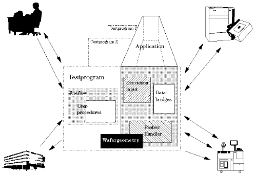

The SmarTest Solution
The SmarTest program is composed of a number of discrete files containing procedure libraries, data, or ASCII code, that are pointed to by a test program file. Since the test program is not compiled, different components are quickly and easily linked together.
The two main sections of the test program are the testflow and the application model, see the figure below.

The test program comprises prober-handler drivers, data bridges, execution input routines, user procedures, data on the wafer geometry, and a test flow (see the manual Developing a Test Program for further information). Another inherent part of the test program is the application. The application (the combination of the application data file and the application model file) references directly or indirectly all components of a test program; it links all the components together and determines the points in time when procedures, screen dialogs and tasks are to be performed.
The application does not have to be unique to the test program; many test programs can have the same application. Indeed, it would be normal to have an application that describes how the production test process should function with an automatic wafer prober, linked to several test programs.